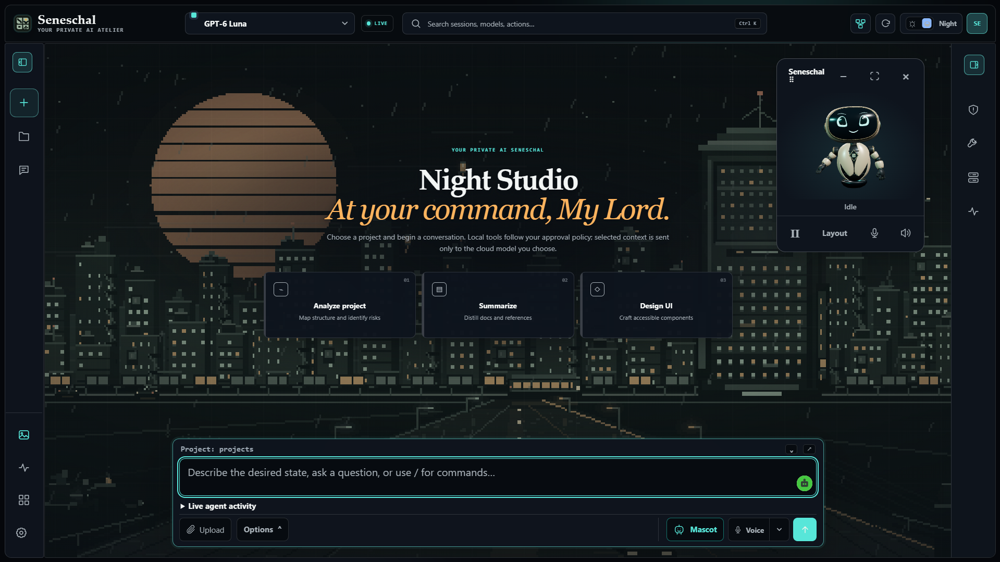

Models, roles and approvals
Choose a model per session. Plan explores without changing files, Build works under the configured permission policy, and Chat leaves active tools off. Tool availability and permission to use it are separate decisions.
03 / AI workspace · Windows / WSL / OpenCode
A personal workspace for OpenCode on Windows and WSL. Keep conversations, models, tools and multi-agent work together, with explicit approvals and a configurable interface.
For example, two agents can finish separate tasks before a reviewer receives both results. The examples below show what happens when a prerequisite or access decision holds up the next task.
Understand the workflow
Select a box to read its role and connections. Its example link names the step you can watch; some components share an animation.
The carrier is a task result. The barrier represents its access policy. Try a wait or a correction.Repeats automatically while in view. Pause to hold a moment.
These examples explain the workflow without running agents or reading sessions. A script-free map is also available.

The current workspace / Beta 20
Choose a model per session. Plan explores without changing files, Build works under the configured permission policy, and Chat leaves active tools off. Tool availability and permission to use it are separate decisions.
Turn one selected plan into a team, or configure the board yourself. Up to eight independent workers can run in parallel. Dependencies pass completed results downstream; bounded correction requests and a configurable supervisor keep review visible. Saved boards retain their linked sessions.
Overview, Sessions, Usage and Service views bring activity into the workspace. An optional local history service indexes OpenCode history. Live progress and recorded history remain separate, and usage estimates are not provider invoices.
Use browser speech or optional NVIDIA cloud speech, with separate mic and speaker controls. The local companion follows listening, thinking and speaking, with docking, resizing and camera controls. NVIDIA speech requires explicit consent and sends audio to its provider.
Nine animated wallpaper scenes include the Afterlight worlds, with scene interactions, lighting and motion controls. English and فارسی controls support right-to-left panels without rewriting technical paths or chat content. Wallpaper art needs no model or speech call.
Private Phone Access pairs your own browser through Tailscale after the installation passes its local checks. The PC stays awake and runs the engine. Pairing, credentials and sensitive service controls stay on the PC; this is remote access, not cloud hosting.
Optional integrations connect browser automation, Blender and a VS Code companion. Each needs its own supported local setup. Explore the controls in the user guide ↗
My contribution
Working with several agents creates decisions about who does what, which tasks depend on others and what an agent may change. I structured the workflow and directed the AI-assisted implementation: sessions, roles, access controls and a board for coordinating dependent work.
A dependent task starts after its selected prerequisites finish. Each board card retains a session, and a configured supervisor can review the completed work. The source and beta releases document the Windows/WSL setup and local integrations.
Workflow decisions
Selected dependencies define what a task waits for. A downstream task starts after all its selected prerequisite tasks finish. The overview omits parallel branches and repeated tasks to keep the main path readable.
Modes and permissions describe the selected agent’s access. Plan mode is read-only; Build asks by default. The policy is configurable, and actions, providers and integrations do not all have the same enforcement.
Each board card is an OpenCode session. Completed prerequisites can pass labelled handoffs downstream, keeping the context and result connected to the dependent work.
A configured supervisor is responsible for final acceptance. The board makes review and handoffs visible. Generated work still needs to be checked for correctness and safety.
Download and setup
Requires Windows 11, WSL, Node.js 20+ and an existing OpenCode installation with a connected provider. Node 22.16+ is recommended for the full feature set. Download the Beta 20 ZIP, extract it and run install.cmd; then open the desktop shortcut. It is a script-based installer, not a standalone signed native app.
Packaged copies check published releases through Settings → App updates. Downloads are checksum-verified and local data is preserved. Source checkouts update through Git. Finish active tasks before restarting. Phone Access has its own setup and verification steps.
The release, user guide and current repository document the workspace, Agent Board, Activity, voice and phone access. The screenshot below the interactive examples matches the image in the current repository.
Beta 20 reports 288 passing source/package tests and 207 separate synthetic Phone Access checks. Those checks cover source behavior and packaging; they do not replace testing a fresh Windows/WSL installation, physical phone or microphone. Read the validation record ↗
Cloud model use depends on the selected provider. A local workspace does not mean that model requests remain entirely on the computer; the provider receives the prompt context needed for a request.
This page runs no agents and reads no private sessions. Its interactive map and railway explain the task-board workflow, not every feature listed above. Beta software and generated results still require review.
Updated 1 November 2026 against source revision 9758760 and the published Beta 20 release.